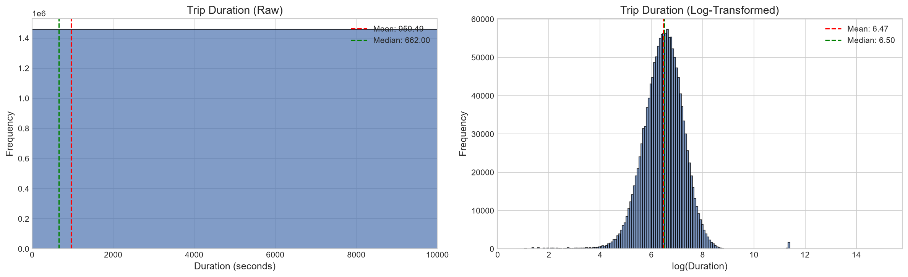
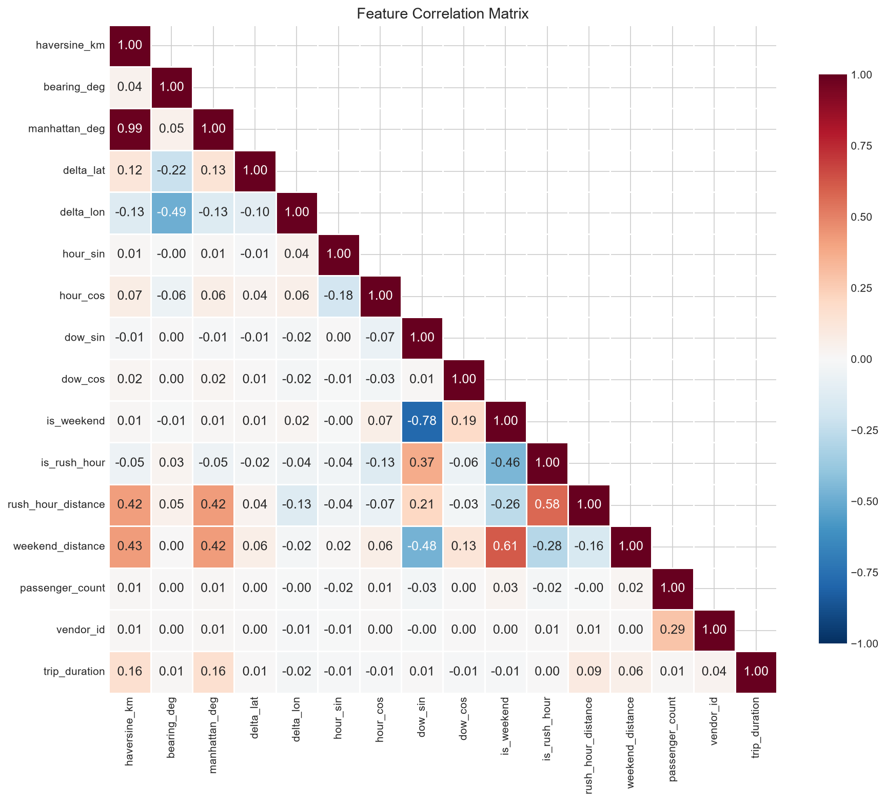
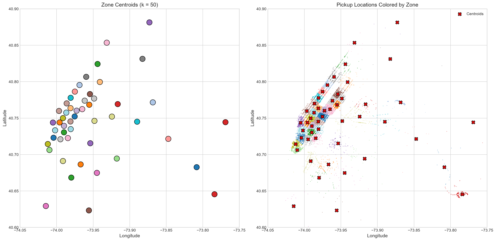
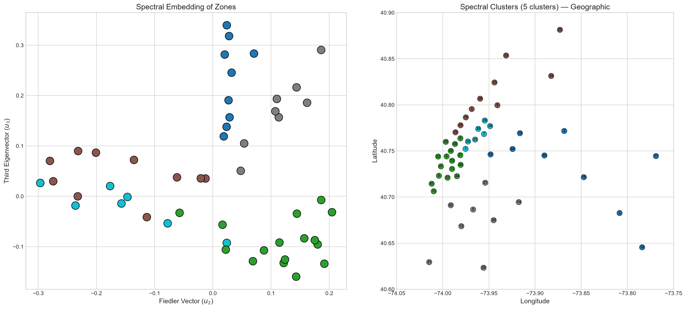
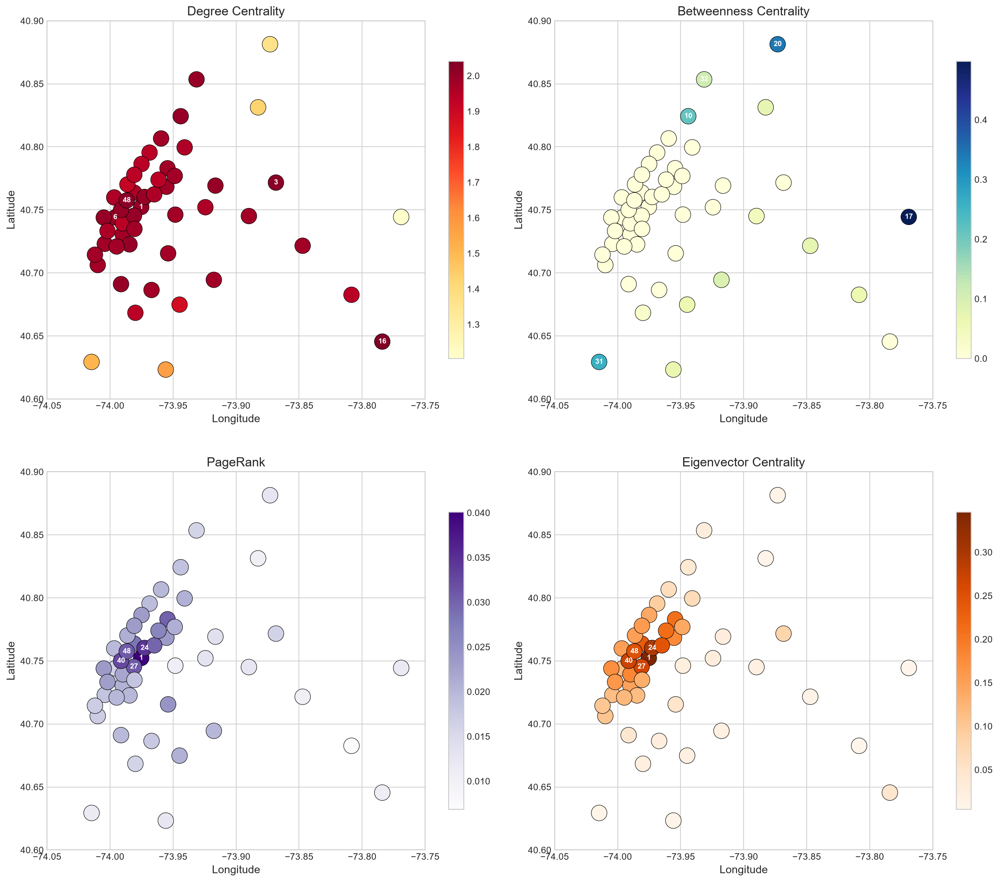
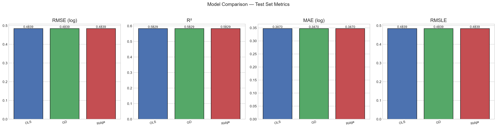
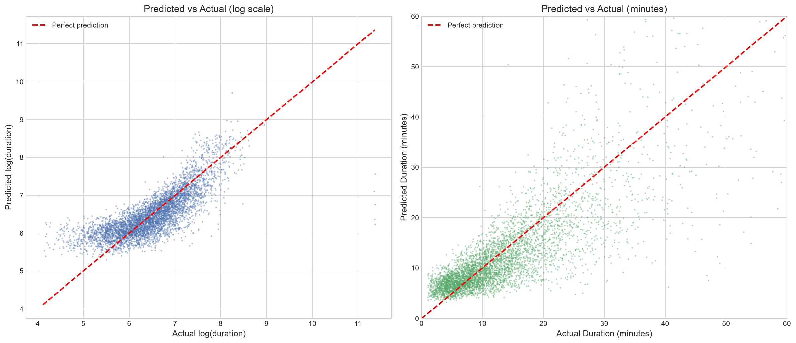
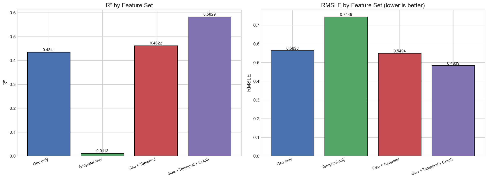
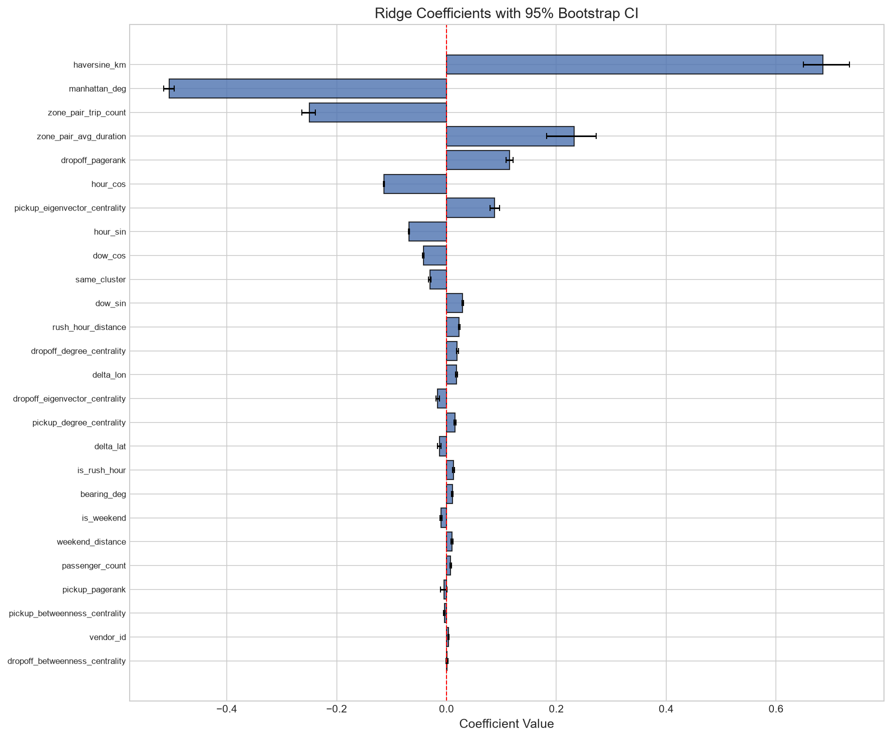
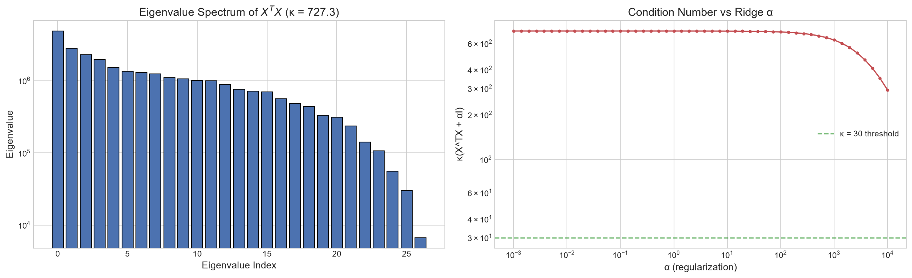

Why we log-transform the target
Trip duration spans seconds to hours with a long right tail (a handful of trips take almost 24 hours). Fitting a linear model directly to this scale would let a few extreme trips dominate the loss. Transforming with y′ = log(1 + y) compresses the tail and gives a distribution close to normal, which is exactly what a linear-Gaussian model assumes.

An early warning sign: 99% correlated features
Haversine (straight-line) distance and Manhattan (grid) distance turn out to be 99% correlated — unsurprising in a mostly grid-like city, but a clear signal that XTX will be close to singular. This is the first hint that we will need Ridge regularisation rather than plain OLS once more correlated features (like the graph-based ones) are added.

Turning the city into a graph
We cluster all pickup and dropoff coordinates into 50 zones. Every trip then has a pickup zone i and a dropoff zone j; counting trips between zone pairs gives a 50×50 adjacency matrix A, from which we build the symmetric normalised graph Laplacian Lsym = I − D−1/2AsymD−1/2 (we proved it is positive semi-definite).

Spectral clustering recovers real NYC geography
Using the Laplacian's eigenvectors, spectral clustering groups the 50 zones into 5 clusters — and they line up almost exactly with Manhattan centre, JFK airport, LaGuardia airport, Brooklyn, and outer Queens, with no geographic information given to the algorithm beyond trip counts.

13 graph-based features
Beyond cluster membership, we compute four "importance scores" per zone from the adjacency graph. Together with the cluster labels, these give 13 new graph-derived inputs that are attached to every trip based on its pickup and dropoff zone.

Three models, built from scratch
OLS solves the normal equation w* = (XTX)−1XTy directly. Gradient Descent updates weights iteratively using the theoretically safe step size η < 2/λmax(H); after 2000 iterations its squared errors are statistically identical to OLS's (Welch's t = 0.006, p = 0.995), confirming the step-size theorem exactly. Ridge adds an α‖w‖² penalty, with α chosen by 5-fold cross-validation, and is our best model.

Overall accuracy
On 216,846 held-out trips never seen during training, Ridge regression reaches R² = 0.583 and RMSLE = 0.484 — explaining about 58% of the variance in trip time using a purely linear model with no external traffic or weather data.

Graph theory is the biggest single win
Removing the 11 graph-based features and refitting Ridge worsens the mean-squared error by 22.4% (p = 1.17×10−113). Treating the city as a network is not decoration — it is the single largest source of predictive power in the project, ahead of the geometric and temporal features.

Every feature is statistically real
A 200-iteration bootstrap gives 95% confidence intervals for all 26 coefficients, and every interval excludes zero — so each engineered feature, geometric, temporal, interaction and graph-based alike, is statistically distinguishable from noise.

Numerical stability and the Ridge penalty
Without regularisation the condition number is κ = 727, well above the safe threshold of 30, consistent with the near-collinear distance features. Ridge lowers κ below 30 once α ≳ 0.3. Interestingly, cross-validation on our 1M+ row dataset actually picks α* = 10−4 (the smallest value on the grid): with this much data the estimator's variance is already tiny, so there is little left for Ridge to shrink in practice, even though the features remain severely correlated in theory.
Anomalies, observations and patterns
- Anomaly: Haversine and Manhattan distance are 99% correlated — expected in a largely grid-based road network, but it made Ridge regularisation necessary rather than optional.
- Observation: spectral clustering of the 50-zone trip graph reproduces real NYC geography (Manhattan, JFK, LaGuardia, Brooklyn, outer Queens) purely from trip-count data, with no coordinates given to the clustering step itself.
- Pattern: graph-based features consistently dominate feature-importance and ablation results — removing them costs 22.4% more MSE than removing any other feature group, confirming that network structure, not just raw distance, drives trip duration.